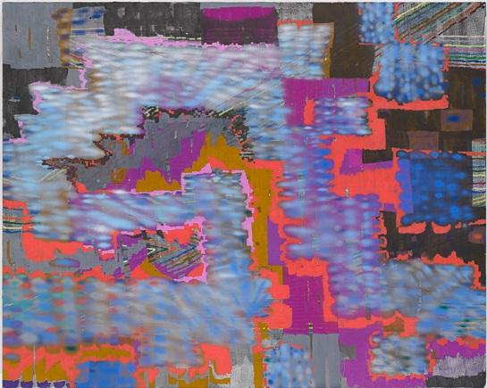
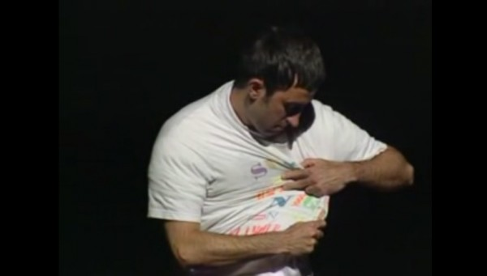

-
Selection No. 4
by Jocelyn Miller November 27, 2012
Jeremy Deller’s ‘Sacrilege,’ 2012. courtesy of the artist.
1. So if you haven’t heard, time travel is illegal in China; more specifically, any cultural material depicting or using it as a main plot-point. The Chinese Administration for Radio, Film, and Television condemns time travel programs, which according to the state:
lack positive thoughts and meaning….casually make up myths, have monstrous and weird plots, use absurd tactics, and even promote feudalism, superstition, fatalism and reincarnation +
Oh wait, does that sound familiar? Perhaps suspiciously exactly like the precise task of artists? Better outlaw them too (see: Ai Weiwei). Perhaps the revolutionary potential of cultural materials that are both expansive in their imaginative thinking and also escapist in their entertainment value fosters the kind of individualist, desire-motivated thinking that is intolerably threatening to oppressive regimes. For this reason, we must open-heartedly embrace all forms of cultural material that include this trope, even if it means we have to watch movies like Ashton Kutcher’s The Butterfly Effect or continue to fetishize Michael J. Fox and 1985 DeLoreans. What would our cultural landscape be without people like Orson Welles or Chris Marker, or more recently artists like Adrian Villar Rojas, whose work calls upon eras both prehistoric and futuristic, or Jeremy Deller, who during the London Olympics made an inflatable Stonehenge-shaped moon bounce? Even movies like the recent and exquisite Holy Motors, directed by Leos Carax, are to be staunchly supported, if for nothing else than their mental flexibility to infiltrate, alternate, and transport between worlds and dimensions. Long live the frivolous, the absurd, the monstrous, and the casual construction of myths.

Kim Kardashian krying. courtesy of E!
2. There are plenty of parodic twitter accounts, and many of them make use of the effective, but ultimately easy trick of mingling high and low. That said, somehow, the author of KimKierkegaardashian, or
@KimKierkegaard, takes this gamble into the most absurd of territories, fusing the luxury good-flecked vernacular of the Kanye-dating, Mercedes G-Wagon-driving, fragrance-pushing, booty-bumping reality television star (read: phraseology having to do with style, mock-horror at having to do work, distress involving the condition of her nails, etc.) with the sedately doleful insights of the foundational existentialist Soren Kierkegaard, deftly weaving existential dread with spirited bimbo-latry.
still from Shah’s ‘Between the Waves,’ 2012.
3. Tejal Shah‘s Between the Waves, 2012 was one of the more unlikely (and physically out of the way) additions to Documenta 13. While the work itself is dauntingly sprawling, the saturnine beauty and primordial tone of Shah’s five-chapter circular fable points to a contemporary condition of uncertainty. The artist captures this anxious and collective millennial straddling and searching for the defining features of our present by using that which is undecipherable, pictorially and historically, of the past. Adopting strategies similar to artists like A. L. Steiner, Matthew Barney, Mika Rottenberg, and most obviously Rebecca Horn (whose own Einhorn was exhibited in Documenta V), Shah’s 85-minute piece references archaeology of the Indus Valley in Western India, home of the earliest known symbolic representation of a single-horned animal — which the work posits as a Unicorn — dating from 5000 – 2000 BC. The work engages the mythological, via the symbol of the Unicorn, as something co-opted from the East by the West, but also as a potent symbol for sexuality and gender. The artist, who is Bombay-based, but studied at SAIC, deals ambitiously with Indian transgender communities, known as hijra / hijada, notions of “hysteria” by way of feminism, orientalism, the body, religious iconography, mythology, and animism. A sculptural tablet blinks white light, which is revealed to be an iPhone Morse code app, suggesting the object is a Rosetta stone-like cipher for the piece. The title alludes to Virginia Woolf’s Between the Acts, and the five chapters that comprise the main channel — Dreamtime, Catastrophe, Regeneration, Hedonism, Ache — each correspond to a poem commissioned by Minal Hajratwala, poems that are reminiscent of modernists like Mina Loy or HD.
image from Gob Squad’s Infinite Jest, 2012. image courtesy of the artists.
4. This past summer in and outside of Berlin, the experimental artists troupe Gob Squad, in collaboration with Hebbel am Ufer theater company, staged one of the most ambitious performances of literary sustenance, theater, and geographical freneticism I’ve ever had the pleasure to soldier on through. Tasking themselves with not just reading, but enacting in physical space with full-on ambulatory sets and dramaturgy, David Foster Wallace’s seminal tome, Infinite Jest, Gob Squad presented Infinite Jest by David Foster Wallace: 24 Hours Through the Utopian West this past June. The novel itself spans 1079 pages — each page chock a block with the dense, self-interrogatory and narratively recursive style that has made the writer so popular and so uncanny at depicting as close to reality as it gets the way mental processes jump and percolate and buckle and interrelate. The troupe led participants on a day long journey, transitioning from a community tennis court (hilariously the Steffi Graf Stadium) to the vast Berlin Grunewald.
Kraus’s Summer of Hate. courtesy of the author.
5. Chris Kraus’s cogent essay, Indelible Video, in Semiotexte’s Where Art Belongs, and her new novel Summer of Hate are both trenchant and earthy takes on the contemporary problems of art and identity in a corporatized, post-individual world where people yearn for identification and separation — even exemplification in the face of, in her own words, “a subjectivity that’s been bludgeoned to the point of nonexistence.” One of her key observations surrounds the notion that contemporary art practice is much more devoted, in the sense of dedicating time and energy, to the maintenance of an image, guise, or semblance of a life, career, or persona, and less related to actual content or production. Indelible Video sharply compares corporate branding strategy with the current methodologies for influencing contemporary art spheres, comparing the corporate strategies of American Apparel to process artist in their heyday of the 1950s and 1960s. These ideas of a psychically sensitive, expertly tailored simulacrum meaning more than that which it imitates, complicates and enriches the constellation of thinking about current groups of artists like the Bruce High Quality Foundation, and especially a reading of the current Bernadette Corporation show at Artists Space.
While she is known for writing in the first person as herself, or in a thinly veiled version of herself in the third person, she doesn’t engage in an etherealizing process that artists like Sophie Calle or Frances Stark have, to, in her view, gussy up simple social interactions with intellectual gymnastics, admirably contemplative solipsism, or carefully considered display strategies. Kraus asks questions like “what would it be like to be someone who doesn’t have the process of association that comes from education,” working towards, if not a purity of mental examination, a brutal honesty and confrontation with not just the real, but the now.
screen shot of Miller’s color wheel for Calypso.
6. Susan Miller, that goddess, makes it possible for me to read for nearly 20 uninterrupted minutes an entire me-focused (or at least my zodiac sign-focused) opus reflective of my celestial and daily well-being, on a monthly basis. What I mean to say is: she really GETS me. Lest you haven’t dropped the 99cents on iAura (why yes, the oracular iPhone app that photographs you and determines from the digital image the color of your aura), and then synthesized that information with your local sweater vendor, Susan Miller has done the dirty work. All you need do is waltz into the glitzy, plantation-living, island romping, resort-wear magnate Calypso‘s closest boutique to find cashmere to match your aura’s color.
7. Is Harmony Korine mildly infuriating, with his insistence on aestheticized suffer-porn, grotesque-core fantasias? Yes. Do we still want to see these worlds, even though they are removed from a more empirical, documentary-level of devastation, that includes visions of what actual disgustingness and revoltingness look like, stripped from color filters and carefully styled props? Yes. Is that because we are grossly implicated voyeurs that get off on a kind of lifting of a curtain to an underworld where mentally-incapacitated women are sold sexually, babies with bodies like grandfathers tape bacon incomprehensibly to walls, Diego Luna is purported to look an ounce like Michael Jackson, and teenagers casually infect each other with HIV? Yes…reluctantly. Part of this is because the sensitively drawn material contains revelatory imagery; while Korine’s films are often seemingly lackadaisically inscrutable on many fronts, the visual passage of skydiving nuns resplendently black and sleek against a blue sky, with whistling wind billowing their habits like hopeful parachutes, is a striking and ecstatic image. Korine’s neo-picaresque style will be on full-blown, baroque girliness with Spring Breakers, which will take a look at teenage dreams Selena Gomez and Vanessa Hudgens, near non-persons who have been cast in roles and propped up with hairspray and ambition since toddlerhood. With Skrillex on board to score the film, it seems like the kind of project that, rather than spurn and snark about the elements of culture that seem vacuous and incomprehensible, chooses instead to immerse itself into abstruse pockets of radically banal, chipper cultural products in an effort to pursue the purposeless hedonism and consumption that the American Spring Break rite has come to connote. Also, James Franco in cornrows.

Georgia O’Keefe cooking. image from A Painter’s Kitchen, Museum of New Mexico Press.
8. The economy of yogurt has become as distended and multiplying as the bacteria itself in the yogurt: Faje and Chobani reign supreme over the commercial Greek variety, farm-to-table-ish Siggi’s and the 90s era Hackers-ish branded Skyr.IS over the chic Icelandic skyr category, and of course the proletarian charms of Dannon and the continental gentility of Yoplait are constant classics. While Georgia O’ Keeffe’s art is well known and even overdetermined (cue: vilifying remarks of anti-sentimentalists and skeptical feminists and even more skeptical chauvinists), much of her later life was spent largely in the desert in New Mexico, living in a way that would be entirely at home with contemporary sustainable food practices. In fact, Georgia YO ‘ Keeffe pioneered a huge self-irrigating community garden where fruits, vegetables, and herbs grew in 1945, putting all the current political food celebrities to shame. Her most important staple was homemade yogurt, so in the same, incredible house in Abiquiui, New Mexico (which you can only visit by appointment, and which is highly recommended), where boxes of correspondence from her to Alfred Stieglitz reside, archival notes from the Metropolitan museum, alongside early Saarinen and Eames furniture, Ikea furniture she hacked and embedded into the adobe construction of her home, and sculptures by Arthur Dove and Isamu Noguchi, rest her two prized industrial yogurt boilers. She’s so DIY she don’t even KNOW. Eat your (yogurt-filled) heart out, Michael Pollan:
1/4 cup high quality yogurt
1/2 gallon whole cow or goat’s milk
4 1 pint glass canning jars
Electric yogurt maker, or large pan containing waterPour milk into saucepan and heat it to 110 degrees. When the milk is the correct temperature, remove 1/2 cup and mix with the yogurt. Add back to heated milk. Pour the mixture into glass jars and set in the pan of hot water (100-120 degrees), and maintain temperature for 4-6 hours. When the yogurt thickens, cover and refrigerate. Georgia recommends eating plain, and every now and then adding a banana, a pinch of cinnamon, or peaches, pears, or apricots.
Fig 8. Fitter In, 2010. courtesy of the artists.
9. Now that we can finally stop having nightmares about Mitt Romney’s secret Mormon underwear, I can fully smile and laugh at Portland-based artists’ Sara Phillips and Neil Dacosta‘s terrific sendup of Mormons doin’ it right. Mormon Missionary Positions depicts two young gentlemen immaculately in missionary whites, the artists wittily pose their subjects in a variety of deeply erotic, athletic sex positions, with the starchy whites and shiny black shoes and perversely anal — pun intended — name tags still pinned to their shirts. The elaborate costume, which acts as an insistent visual shorthand for purity, functions in these images as a kind of perverse barrier that jabs at Mormonism’s own strange practices, but also reveals creative and energetic sex positions to be balletic, but also even more dirty than they might be if the boys were butt naked.
Ferris’s ++++****)))), 2012. courtesy of Mitchell-Innnes & Nash, New York.
10. While there’s something undeniably 80′s and overly palatable about Kentucky-born, Brooklyn based Keltie Ferriss’ paintings, the layered visual idiom of sidewalk graffiti transmogrifies into the pixelated realms of Microsoft Paint, which saves it from being woefully dated and makes her canvases pyrotechnically contemporary. This show presents a dozen large-scale paintings created over the past year.
Keltie Ferris is on view at Mitchell-Innes & Nash’s Chelsea space, 534 West 26th Street, New York, through January 12, 2013.
still from Jérôme Bel’s Shirtology, 1997. available on UbuWeb.
11. At this point, we all can probably agree that UbuWeb is pure magic, for its open-source offerings of material that is both incredibly high quality and incredibly difficult to find otherwise. In some ways, Ubu is filling the role of the library, the micro cinema, and the museum, albeit in a new and even more accessible way. Recently they launched a Beta version of their Dance category, launching materials ranging from a Pina Bausch web retrospective to Fred Astaire to Fatboy Slim. Get ready to spend an afternoon alone at home with your computer, a leotard, and embarrassing homemade digital videos that you will eventually have to delete in shame.
image courtesy of The Museum of Innocence, Istanbul.
12. After several years of delay, Orhan Pamuk’s physical monument to his narrative fiction process is finally open and operating, and now exists as a sort of hermetic, cryptic, object-translation of his 2008 novel of the same name, The Museum of Innocence, which centers on a wealthy upper-class Turkish man who falls in love with a much younger shopgirl, and although loves her ardently, finds himself unable to treat her as anything more than an extension to his own identity, objectifying her and ruining any chance for a real kind of relation or progression. One could argue that this exercise itself is one in objectification; that it seems a fairly gimmicky thing to do, on the order of Elvis’ Graceland Mansion or Dollywood, to create a specific and esoteric site that enshrines a single literary work located on a strange street in the blank district in Istanbul. That said, it is precisely this kind of impulse, one that Pamuk reveals as a perhaps unfortunately entirely human impulse, that The Museum of Innocence is about. More to the point, it’s eminently clear that the novel was built to situate the museum, and not the other way around, making it a very interesting foray into artistic process. It’s almost a paean to Vladimir Nabokov, whose Lolita in some ways shares a kind of DNA with the character dynamics at play in Pamuk’s story. Nabokov closes his novel with the idea that art is the only salve and solution to the impossibility of the human relationships in his novel: “I am thinking of aurochs and angels, the secret of durable pigments, prophetic sonnets, the refuge of art. And this is the only immortality you and I may share, my Lolita.” It seems Pamuk has taken this one step further, and erected his own, concrete refuge of art.